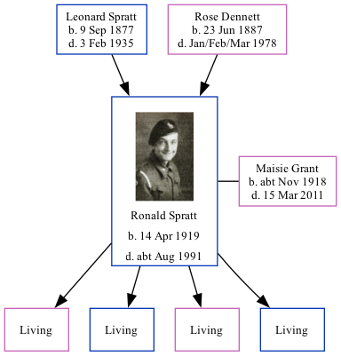

Ronald Ernest Spratt 1919 - c1991
[ Home ] | [ Calendar ] | [ Surnames Index ] | [ Family History ]A barman and the son of Leonard Spratt (an agricultural laborer) and Rose Dennett, Ronald Spratt, the first cousin once-removed on the father's side of <a href="I1.html">Nigel Horne</a>, was born in Thanet, Kent, England on Apr 14, 1919<span class="citation">1,2,3,4,5</span> and. He married Maisie Grant (with whom he had 4 surviving children <a href="I2090.html">Ann Phyllis</a>, <a href="I2089.html">Ian Ronald</a>, <a href="I2088.html">Christine R</a> and <a href="I2207.html">David J</a>) in Thanet around Aug 1939<span class="citation">6</span>.</p><p>Throughout his life, he lived at 11 Upper Grove, Cliftonville, Kent, England on Jun 19, 1921<span class="citation">1</span>; and at 49 Pound Lane, Canterbury, Kent on Sep 29, 1939<span class="citation">2</span>. During 1942, he was serving in the army (<em>regiment: Royal Artillery; Rank: Gunner / Driver; Service number: 1156463</em>).<p>He died <i>c.</i> Aug 1991 in Ashford, Kent<span class="citation">3,5</span>.
Parents
- Leonard was born on Sep 9, 1877
- Rose Ethel Muskett was born on Jun 23, 1887
Citations
- 1921 Census Of England & Wales - Findmypast (was age 2 and the son of the head of the household)
- 1939 Register - Findmypast (was recorded at this address)
- England & Wales deaths 1837-2007 - Findmypast
- England & Wales, Birth Index: 1916-2005 Online publication - Provo, UT, USA: The Generations Network, Inc., 2008.Original data - General Register Office. England and Wales Civil Registration Indexes. London, England: General Register Office. © Crown copyright. Published by permission of the Cont
- England & Wales, Death Index: 1984-2005 Online publication - Provo, UT, USA: The Generations Network, Inc., 2007.Original data - General Register Office. England and Wales Civil Registration Indexes. London, England: General Register Office. © Crown copyright. Published by permission of the Cont
- England & Wales, Marriage Index: 1916-2005 Online publication - Provo, UT, USA: The Generations Network, Inc., 2009.Original data - General Register Office. England and Wales Civil Registration Indexes. London, England: General Register Office. © Crown copyright. Published by permission of the Cont
Notes
Ron was a talented pianist who played by ear. He was popular in pubs and was never short of a pint.
Media
Ronald Spratt 2
Ronald Spratt 3
Ronald Spratt - 4
Ronald Spratt - 5
Ronald Spratt - 6
Ronald Spratt - 7
Ronald Spratt
Ronald Spratt - 8
Ronald Earnest Spratt - WW2 Record
England & Wales births 1837-2006 - BMD/B/1919/2/AZ/001052/029
England & Wales marriages 1837-2008 - BMD/M/1939/3/PZ/000389/117
England & Wales deaths 1837-2007 - BMD/D/1991/9/78715706
1939 Register Transcription - TNA-R39-1678-1678I-008-15
Royal Artillery attestations 1883-1942 Image - GBM-ROYALART-1156000-00050
British Army Casualty Lists 1939-1945 - GBM/WO417/0685077
World War 2 Allies Collection - WW2/03256442
World War 2 Allies Collection - WW2/02347768
1921 Census Of England & Wales - GBC/1921/RG15/04446/1191/04
Family Tree
Generated by Ged2Site. Last updated on Jul 20, 2025